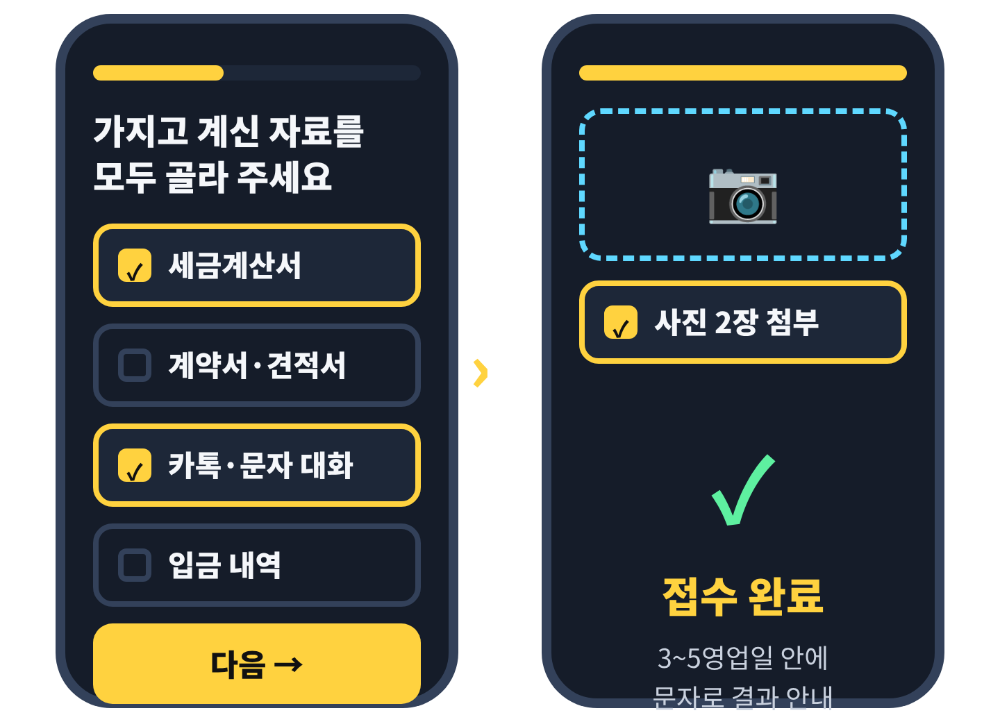

떼인 거래대금·외주비,
내 이름으로 직접 받는 방법을 같이 만들고 있습니다
사장님 · 프리랜서 · 1인 사업자 · N잡러 누구나
- 버튼만 눌러 3분
- 직접 입력은 휴대폰 번호 1개
- 수수료·성공보수 0원
- 소액도 신청 가능
못 받은 돈 상황을 버튼만 눌러 알려주시면, 저희가 만드는 셀프 회수 도구로 해결할 수 있는 사건인지 검토해 문자로 회신드립니다. 맞는 경우 파일럿 참여자로 도구를 먼저 써보시고, 쓰면서 불편했던 점을 알려주시면 됩니다.

지금 바로 써볼 수 있는 도구
파일럿 기간 무료 · 입력 내용은 이 기기 브라우저에만 저장됩니다. 정식 요금제 사전예약 →
이 서비스가 하는 일과 하지 않는 일
✔ 하는 일
- 셀프 회수 도구로 다룰 수 있는 사건인지 적합성 검토
- 내용증명·지급명령 등 서류를 사장님이 직접 작성하는 도구 제공
- 절차별 체크리스트와 일정 안내
- 도구로 어려운 사건은 변호사 상담을 권해드림 (소개비 없음)
✖ 하지 않는 일
- 사장님을 대신한 추심·소송·서류 작성
- 채무자에게 전화·문자·방문 등 직접 연락
- 개별 사건에 대한 법률상담·법률판단
- 회수된 돈의 수령 — 돈은 사장님 계좌로 직접 들어갑니다
처음 듣는 말, 한 줄 풀이
- 내용증명
- “언제, 누구에게, 어떤 내용을 보냈는지”를 우체국이 증명해 주는 우편입니다. 독촉한 기록이 공식적으로 남습니다.
- 지급명령
- 재판정에 나가지 않고 서류만으로 법원이 상대방에게 “돈을 내라”고 명령하는 절차입니다. 상대방이 받고 2주 안에 이의하지 않으면 판결과 같은 힘이 생깁니다.
- 인지대·송달료
- 법원에 내는 수수료와 우편 비용입니다. 지급명령의 인지대는 같은 금액 소송의 10분의 1입니다.
- 소멸시효
- 받을 권리를 오랫동안 행사하지 않으면 받을 수 없게 되는 기간입니다. 그래서 오래된 돈일수록 빨리 확인하는 게 중요합니다.
임금은 이 도구보다 고용노동부 임금체불 진정이 더 빠르고 비용이 들지 않습니다. 고용노동부 고객상담센터 국번 없이 1350에서 안내받으실 수 있습니다.
진행 순서
버튼으로 신청 · 자료 사진 올리기
질문에 버튼으로 답하고, 증빙을 휴대폰으로 찍어 바로 올립니다. 직접 입력은 휴대폰 번호 하나입니다.적합성 검토 (영업일 3~5일)
셀프 도구로 진행할 수 있는 유형인지 확인합니다.회신
① 파일럿 참여 가능 ② 변호사 상담 권장 ③ 이번 파일럿 대상 아님 — 셋 중 하나로 이유와 함께 알려드립니다.파일럿 참여 · 피드백
도구와 체크리스트를 받아 직접 진행하시고, 2주 뒤 15분 정도 사용 후기를 여쭙니다.
참여 신청 — 버튼만 눌러서 3분
질문이 한 화면에 하나씩 나옵니다. 버튼과 체크만 누르시면 되고, 직접 입력하는 칸은 휴대폰 번호 하나뿐입니다. 세금계산서·거래명세서·대화 캡처는 신청 중에 휴대폰으로 바로 찍어 올리실 수 있습니다.
시효가 걱정되시면 먼저 신청하세요. 물품·납품대금과 공사대금은 보통 3년, 그 밖의 상사채권은 보통 5년이 지나면 받기 어려워질 수 있습니다. 시효가 가까워 보이는 신청은 먼저 확인합니다. (일반 기준 안내이며 개별 사건의 시효 판단이 아닙니다.)
누가 운영하나요
법무법인 실무 경력(2003~2007) · AFPK · 사업자등록 사업장(안산) · 문의 010-2088-5383
자주 묻는 질문
사업자가 아닌 프리랜서도 되나요?
됩니다. 디자인·개발·영상·강의 같은 외주 대금은 신청서의 “용역·서비스 대금”을 고르시면 됩니다. 계약서가 없어도 카톡·메일 대화와 입금 내역이 있으면 함께 올려 주세요.
왜 무료인가요?
지금은 도구를 만드는 단계라, 실제 사장님들의 사건과 피드백이 저희에게 가장 필요한 자료입니다. 파일럿 기간에는 비용을 받지 않습니다. 추후 유료 기능이 생기더라도 파일럿에서 무료로 쓰시던 기능은 계속 무료로 유지합니다.
수수료나 성공보수가 있나요?
없습니다. 저희는 대신 받아드리지 않기 때문에 중간에서 뗄 돈 자체가 없습니다. 인지대·송달료 같은 법원 비용은 사장님이 법원에 직접 내시며, 지급명령에서는 이 비용도 상대방에게 함께 청구할 수 있습니다.
검토 후 대상이 아니라고 하면요?
이유를 알려드리고, 필요한 경우 변호사 상담을 권해드립니다. 어느 변호사를 쓸지는 사장님이 정하시며 저희는 소개비를 받지 않습니다.
제 자료는 어떻게 되나요?
적합성 검토와 도구 개선에만 쓰고, 제3자에게 제공하거나 판매하지 않습니다. 삭제를 원하시면 접수번호와 함께 010-2088-5383 또는 itart@finitart.com으로 요청해 주세요.
개인정보 안내
| 수집 항목 | 휴대폰 번호, 신청 답변, 올리신 자료에 포함된 정보 |
|---|---|
| 이용 목적 | 셀프 회수 도구 파일럿 적합성 검토, 회신, 사용 후기 요청 |
| 보관 기간·장소 | 회신 후 6개월 (삭제 요청 시 즉시 삭제) · Google 드라이브·시트에 비공개 저장 (Google LLC, 국외 서버에 저장될 수 있음) |
| 제3자 제공 | 하지 않음 |
| 동의 거부 | 거부할 수 있으며, 이 경우 파일럿 검토가 어렵습니다 |
상대방(채무자)의 주민등록번호·계좌번호 등은 가리고 보내주세요. 검토에 필요하지 않습니다.